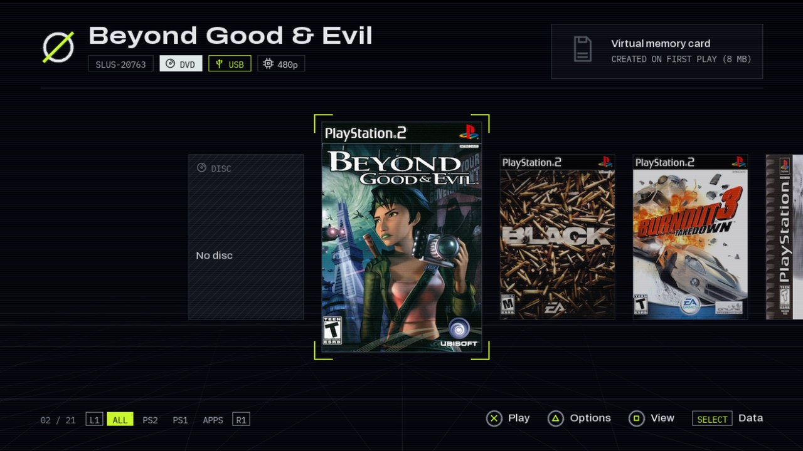
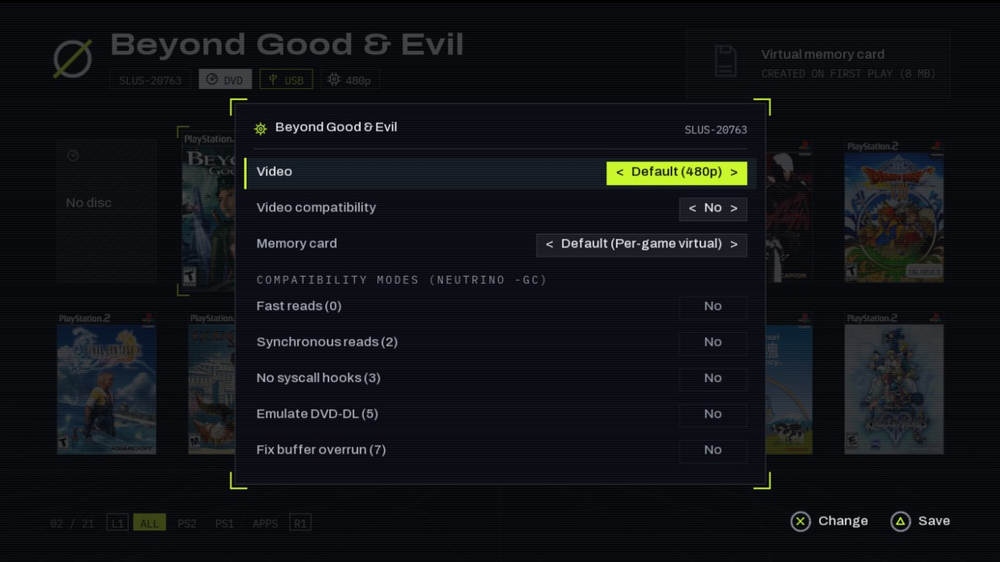

Everything NULD can do, and how to turn it on. You need a PS2 that runs homebrew (FreeMcBoot or similar) and a USB drive.
Download
Copy the zip's contents to the root of the drive, put your ISOs in DVD/ (CD games in CD/) and start mass0:/launcher.elf from uLaunchELF. The setup wizard opens on the first boot.
USB root ├── launcher.elf ├── neutrino/ the loader, with NULD's in-game menu and achievements agent ├── DVD/ PS2 DVD ISOs ├── CD/ PS2 CD ISOs ├── POPS/ PS1 games (POPStarter .VCD), optional ├── APPS/ homebrew .ELF files, optional ├── covers/ written by NULD: the covers it downloads └── nuld/ written by NULD: config.ini, juegos.ini, estado.ini
FAT32 cannot hold files over 4 GB: format the drive as exFAT for big ISOs. Virtual memory cards live in VMC/ on the game's own device.

| ← → ↑ ↓ | Move through the library |
| L1 / R1 | Filter: all, PS2, PS1, apps |
| □ | Change view: carousel, grid, list |
| △ | Per-game options: video mode, compatibility, memory card |
| ○ | The game's achievements, when it has a set |
| ✕ | Play |
| START | The setup wizard |
| SELECT | Status: each game source (games found, or why it failed), the network, frame times |
| L2 + R2 | Switch the menu between 720p and 480i for a CRT TV. It works blind, and is remembered |
NULD writes mass0:/nuld/config.ini on its first boot, and the setup wizard (START) edits the main keys for you. Each key is explained in the file. The main ones:
| Section and key | Values | What it does |
|---|---|---|
| [ui] idioma | es, en | Language of the menus and of the file's comments |
| [juegos] origen | usb, hdd, mx4sio, ilink, mmce, udpbd, udpfs | Where to look for games, comma-separated |
| [juegos] servidor | an IP | The home game server (udpfs) |
| [memorycard] modo | juego, compartida, fisica | A virtual card per game, one shared, or the physical one |
| [video] modo | nativo, 480p, 1080i | Video mode of the games |
| [video] pantalla | 720p, 480i | The menu's own output; 480i for a CRT |
| [red] ip | dhcp or an IP | DHCP, or a fixed IP with mascara, puerta and dns |
| [portadas] descargar | si, no | Download missing covers at boot |
| [logros] activos | si, no | RetroAchievements through the xeRAbora client |
| [actualizaciones] buscar | si, no | Look for a new NULD release at boot |
| [igr] menu | a button combo | The in-game menu's combo; also reiniciar and apagar |
Plug in the network cable (built in on slim PS2s, the network adapter on fat ones). At boot NULD downloads the covers it is missing from xlenore/ps2-covers and keeps them on the USB, so later boots work offline.
Your own covers: tools/covers.py in the zip turns PNG or JPG files named by serial (SLUS-21376.png) into the pair of files for mass0:/covers/.
NULD installs BOOT/NULD.ELF on your memory card, and the setup wizard can set FreeMcBoot to start it (autoboot, a button, or an item in FMCB's menu). Then Restart in the in-game menu (L1+L2+R1+R2+START+SELECT) reboots the console straight into NULD. L1+L2+R1+R2+L3+R3 powers it off.

Video mode (480p or 1080i, forced), Neutrino's compatibility modes for games that need them, and the memory card: the game's own, the shared one or the physical one. The choices are saved in nuld/juegos.ini.
[logros] activos = si. Leave servidor empty to find the client on the network, or set its IP.Keep your ISOs on a Linux machine and play them over the cable. The zip's server/ folder has everything:
# on the server, with the ISOs in /srv/data/ps2/DVD cp -r server ~/nuld && cd ~/nuld mkdir -p ~/.config/systemd/user && cp *.service ~/.config/systemd/user/ systemctl --user daemon-reload systemctl --user enable --now udpfs nuld-catalog loginctl enable-linger $USER curl http://localhost:18290/catalog # what the PS2 will see
Allow UDP 62966 and TCP 18290 in the firewall. On the PS2: [juegos] origen = usb, udpfs and servidor = <server IP>. Use a cable on both ends: udpfs does not survive WiFi packet loss.
Add them to origen, or tick them in the setup wizard: hdd (internal exFAT disk, or HD Loader partitions), mx4sio, ilink, mmce (not together with mx4sio), udpbd (needs a fixed IP in [red]). NULD can also run from an MMCE's SD card with no USB drive at all.
A MemCard PRO 2 or SD2PSX switches to the game's own card when a game starts, whatever its source. To save there instead of a virtual card, set the game's memory card to fisica with △.
With the cable in, NULD looks for a newer release at boot and says so; START installs it. Every file is checked against a manifest signed with the release key before anything is replaced, and the old files stay as .old.
Coming from ORBIT (v1.1 or older): the first boot moves orbit/ to nuld/, keeps BOOT/ORBIT.ELF up to date next to the new BOOT/NULD.ELF, and keeps using VMC/ORBIT.bin as the shared card.
[portadas] descargar = si. The line after the loading screen says which step failed; for "no DNS", set [red] dns = 1.1.1.1.[logros] servidor.mass0:/launcher.txt records each launch.